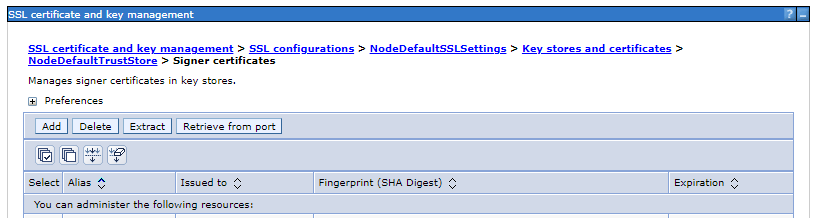

Container Staging
This section describes how to move from an existing HCL Digital Experience (DX) environment to a containerized DX environment.
Overview of the approach
To move from a non-containerized deployment to a containerized deployment, it is recommended to take a similar approach as staging to another DX environment.
The Kubernetes containerized deployment is different from the non-containerized deployment in the following ways:
-
There is no http server in front of your DX deployment. Instead, HAProxy is used for routing to the different pods and JVMs. You can configure your own ingress controller or deploy a proxy to customize cache headers, server static files, or other customizations you configured at your http server.
-
There is no WebSphere cluster.
- Distributed Enterprise Java Beans, JMS distribution, or cache replication of custom DynaCaches is not possible with containerized deployments because the system is using a farm-like deployment of DX Core.
- Any product-based caches are cache-replicated so any changes are distributed to all Core pods.
- If you have custom DynaCaches that must be replicated, it is recommended to use external cache solutions such as Redis or Hazelcast.
- If you use session replication through in memory, you must switch to session persistence using the database instead.
Moving multiple environments
Typically, an overall DX solution consists of multiple environments like development, staging, production authoring, and production rendering. While it is possible to move each environment to a new containerized deployment, it is recommended to move one environment to containers, test and validate, and then use that environment as source for the other environments. In case WCM is used, the Authoring environment is a good choice to use as the initial environment to stage to containers.
Prerequisites
The target environment that is existing in a customer-owned Kubernetes environment requires HCL DX 9.5 and IBM WebSphere Application Server 9.0.5. The HCL Digital Experience and IBM WebSphere Application Server product versions for the source and target environment must be at the same level, though it is sufficient to be on IBM WebSphere Application Server 8.5.5.x with JDK 8.
Ensure the context root for DX Core and the security setup is the same as for the source system (for example, connection to the same LDAP).
If you do not have the 9.5 UI features enabled in your source non-container environment, you should either enable it or disable it on the container environment. For information about enabling and disabling 9.5 UI features, refer to the following: - Enabling 9.5 UI features - Disabling 9.5 UI features
Exporting the source HCL DX server
Follow these steps to export the source HCL DX server.
-
Upgrade the source environment.
Using the IBM Installation Manager, upgrade the HCL DX product to CF17 or later and HCL DX 9.5.
-
Log in to the machine where the source environment is located and set the
ulimit -nto 24000.For example,
ulimit - n 24000. -
Verify that the HCL DX server is started.
-
Navigate to the PortalServer/bin directory to export the base server.
/opt/HCL/wp_profile/PortalServer/bin/xmlaccess.sh -url http://mysource.machine.fqdn:10039/wps/config -user <your DX admin user> –password <your DX admin user password> –in /opt/HCL/PortalServer/doc/xml-samples/ExportRelease.xml -out /tmp/ExportReleaseResults.xml -
Save the output XML file (ExportReleaseResults.xml) to an external or shared drive, for later use when importing to the target environment.
-
Export the content for each Virtual Portal that exists in the source environment, renaming each file uniquely for easy identification.
/opt/HCL/wp_profile/PortalServer/bin/xmlaccess.sh -url http://mysource.machine.fqdn:10039/wps/config/vpcontextroot -user <your DX admin user> –password <your DX admin user password> –in /opt/HCL/PortalServer/doc/xml-samples/ExportUniqueRelease.xml -out /tmp/ExportVP1Results.xml -
Save the Virtual Portal output files to an external or shared drive for later use when importing to the target environment.
-
Save the /opt/HCL/wp_profile/PortalServer/deployed/archive directory files to an external or shared drive, for later use when importing to the target environment.
-
If you are using PZN rules, export the PZN rules using the Personalization Administration Portlet functions and save the generated Workspace.nodes file to an external or shared drive, for later use when importing to the target environment.
- Log in to the HCL DX Home Page.
- Navigate to Personalization > Business Rules* > Extra Actions > Export.
- Save the output file.
-
When applicable, save all custom files (application and theme EAR files, WAR files) to an external or shared drive, for later use when importing to the target environment.
-
Validate if you have any custom DynaCaches, URLs, JVM Environment Parameters, or other custom WebSphere configuration.
If you are not sure what customizations were applied, you can use the WebSphere Configuration Comparison Tool.
Importing into the container HCL DX target server
Before starting the import, complete the Kubernetes deployment with the right CF level and configure the prerequisites. Ensure that the context root matches the previous deployment, and the security is configured (for example, connected to LDAP).
-
Log in to the machine to access your HCL DX Container.
-
Download, install, and log in to the command line client for your Kubernetes environment according to the client instructions. For OpenShift, that is Red Hat OpenShift Command Line Client. For Non OpenShift, that is the Kubectl command line tool.
-
With only a single instance of an HCL DX container running, exec in, and ensure the
ulimit -nvalue is at least 24000. -
Empty the base HCL DX server.
-
OpenShift:
oc exec –it dx-deployment-nnnnn /bin/bash -
Non OpenShift:
kubectl exec –it dx-deployment-nnnnn /bin/bash
/opt/HCL/wp_profile/ConfigEngine/ConfigEngine.sh empty-portal –DWasPassword=<your WAS admin user password> –DPortalAdminPwd=<your DX admin user password>The output displays a BUILD SUCCESSFUL message. If not, check the /opt/HCL/wp_profile/ConfigEngine/log/ConfigTrace.log for errors.
-
-
Clean up the deleted pages in the target server by using XML Access:
/opt/HCL/wp_profile/PortalServer/bin/xmlaccess.sh -url http://my.target.fqdn/wps/config -user <your DX admin user> –password <your DX admin user password> –in /opt/HCL/PortalServer/doc/xml-samples/Task.xml -out /tmp/task_result.xmlThe output displays a BUILD SUCCESSFUL message. If not, check the /opt/HCL/wp_profile/logs/WebSphere_Portal/SystemOut.log for errors.
-
Copy the output XML files, custom EAR and WAR files, Workspace.nodes file, and the ../deployed/archive directory files to a location on the local machine, making sure to preserve the file names and structure from the external or shared drive and then into the DX container.
-
cp /drive/* /tmp/ -
OpenShift:
oc cp /tmp/* dx-deployment-nnnnn:/tmp/ -
Non OpenShift:
kubectl cp /tmp/* dx-deployment-nnnnn:/tmp/
-
-
Create a directory under /opt/HCL/wp_profile to house any custom code or shared libraries.
mkdir –p /opt/HCL/wp_profile/customAppsNote
In any containerized environment, all custom code and shared libraries need to exist under the persisted profile volume.
-
Move the copied files to the appropriate locations in the container.
-
mv /tmp/custom.ear /opt/HCL/wp_profile/customApps/ -
mv /tmp/deployed/archive/* /opt/HCL/wp_profile/PortalServer/deployed/archive/
-
-
Deploy custom applications, predeployed portlets, or themes.
-
Configure any required syndication properties in the WCM ConfigService. For example, enabling memberfixer to run during syndication.
-
Create any required configuration items. For example, URLs, namespace bindings, and so on.
You can use the WebSphere Application Server UI or deploy using DXClient or wsadmin commands. It is recommended that you write a deployment script because you must perform the same deployment operation on your other environments.
It is also recommended to run a comparison report using the WebSphere Configuration Comparison Tool.
For information about possible configuration settings in Resource Environment Providers, refer to the Resource Environment Providers section.
-
Import the source server base content into the HCL DX server in the container.
-
OpenShift:
oc exec –it dx-deployment-nnnnn /bin/bash -
Non OpenShift:
kubectl exec –it dx-deployment-nnnnn /bin/bash
/opt/HCL/wp_profile/PortalServer/bin/xmlaccess.sh -url http://my.target.fqdn/wps/config -user <your DX admin user> -password <your DX admin user password> -in /tmp/ExportReleaseResults.xml -out /tmp/ExportReleaseResults_ImportResult.xmlThe output displays a successful execution. If not, check /tmp/ExportReleaseResults_ImportResult.xml for errors.
-
-
Update the WCM content in the HCL DX server instance:
/opt/HCL/wp_profile/ConfigEngine/ConfigEngine.sh update-wcm -DWasPassword=<your WAS admin user password> -DPortalAdminPwd=<your DX admin user password>The output displays a BUILD SUCCESSFUL message. If not, check the /opt/HCL/wp_profile/ConfigEngine/log/ConfigTrace.log for errors.
-
If you are using PZN rules, import the PZN rules by using the Personalization Administration Portlet functions.
- Log in to the HCL DX home page.
- Navigate to Personalization > Business Rules > Extra Actions > Import.
- Browse to the /tmp/Workspace.nodes file and click Import.
-
Log in to the HCL DX home page and verify that the base server is functioning correctly:
http://my.target.fqdn/wps/portalCheck the /opt/HCL/wp_profile/logs/WebSphere_Portal/SystemOut.log to ensure that there are no startup errors.
-
Create all of your Virtual Portals:
/opt/HCL/wp_profile/ConfigEngine/ConfigEngine.sh create-virtual-portal -DWasPassword=<your WAS admin user password> -DPortalAdminPwd=<your DX admin user password> -DVirtualPortalTitle=VirtualPortal1 -DVirtualPortalRealm=VirtualPortal1Realm -DVirtualPortalContext=VirtualPortal1 -
For each Virtual Portal, import the content using XML Access. Make sure that the context root and the Virtual Portal name both match in the XML Access command:
/opt/HCL/wp_profile/PortalServer/bin/xmlaccess.sh -url http://my.target.fqdn/wps/config/VirtualPortal1 -user <your DX admin user> -password <your DX admin user password> -in /tmp/ExportVP1Results.xml -out /tmp/ExportVP1Results_ImportResults.xml -
Restart the HCL DX server and check /opt/HCL/wp_profile/logs/WebSphere_Portal/SystemOut.log to ensure no startup errors.
Syndicating the source and target environments
Follow these steps to syndicate the source and target environments:
Note
If you have larger libraries, the default database must be transferred to any of the supported databases. For information about supported databases, see Database Management Systems. If you want to know more about transferring the default database of the DX 9.5 Container to IBM DB2, see Transfer HCL Digital Experience 9.5 container default database to IBM DB2.
-
Since the Kubernetes deployment typically allows only SSL traffic, you need to update the SSL Signer certificates for the Syndicator and Subscriber setups so that they can communicate with each other. To do this, log into the WAS console (
https://machine_name/ibm/consoleorhttps://machine_name:port/ibm/console) and go to the Signer certificates page that is available in the Security > SSL certificate and key management menu:
-
Select Retrieve from port and create the signer certificate, and then save the certificate.
-
Log in to HCL DX instance to configure syndication: http://my.target.fqdn/wps/portal.
-
Navigate to Administration > Security > Credential Vault > Add a Vault Slot.
-
On the Credential Vault page, select New and provide the following:
- Name - enter the name for the vault slot.
- Vault resource associated with vault slot - select new and enter the vault resource name.
- Vault slot is shared check box - tick this check box and provide the credentials for a user that has appropriate access on the source/syndication system: Shared userid, Shared password, and Confirm password.
- Click OK to save the changes.
-
Navigate to Portal Content > Subscribers. Click Subscribe Now.
-
In the Subscribe to a syndicator pop-up, provide the following:
- Syndicator URL
- Syndicator Name
- Subscriber Name
- Credential Vault Slot created in step 2.
- Click Next.
-
Select the libraries to syndicate and the Scope of the syndication.
- Click Finish.
- If you have Virtual Portals, you must repeat the syndication steps for each Virtual Portal.
-
If needed, configure library permissions when syndication is completed.
Note
As with syndication between on-premise setups, it is possible to do a one-way syndication from an earlier to a later release.
You do not need to disable Practitioner Studio to do this syndication.
Syndicating large libraries
Syndicating large libraries, especially when syndicating all items if you need all versions and projects on the containerized environment, can be a slow process. For these scenarios, you can consider copying the JCR database from the non-container to the container system and reconnecting the container to the copied database. For details, see Manual staging to production process. Note that these instructions are specific to DB2, but you can also apply them to MS SQL Server and Oracle.
Resource environment providers
HCL DX comprises a framework of configuration services to accommodate different scenarios that portals must address. You can configure some of these services.
The configuration for each service is stored in and accessible for configuration through the WebSphere® Integrated Solutions Console. In the WebSphere Integrated Solutions Console, most of the portal configuration services are spelled as one word. Some services are abbreviated and preceded by the letters WP. For example, in the WebSphere Integrated Solutions Console, the portal Configuration Service is listed as WP ConfigService.
For more information about each service, see Service configuration.
If you cannot recall all the configuration settings you usually change and also have not automated the setting using CI/CD, you can compare the configurations using the WebSphere Configuration Comparison Tool.
When comparing configuration settings, you might notice differences in the settings that DX configures in containers. The following is a list of changes performed for Resource Environment Providers for containers/Kubernetes:
- WCM WCMConfigService: Tuning changes as documented in the tuning task: Portal server performance tuning tool
- WP ConfigService: use.db.cache.invalidation.table and db.cache.invalidation.read.freq for cache replication. digitalAssets.useSSLDAM for DAM integration.
- WCM DigitalAssetManagerService: enabled if using DAM.
- WP CacheManagerService: Tuning changes as documented in the tuning task: Portal server performance tuning tool
Configuration tasks changing resource environment providers
Configuration tasks such as changing the context root, enabling features like social publishing from WCM or others can make changes to the resource environment providers. Some of the these configurations have been moved to the Helm chart. If you are performing remote search, changing the context root or admin password, doing performance tuning, or enabling WCM Artificial Intelligence, you must trigger these configuration tasks from the Helm chart. All other configurations are performed using tasks.
Also, a few features are enabled out-of-the-box on containers that are not enabled by default for non-containers (for example, DAM integration and WCM Multilingual).
Additionally on containers we have disabled anonymous sign up via access control - it can be re-enabled via the config task or changing access control: Registration/Edit My Profile and Login portlets
If you are unsure what was performed on your non-container environment, check the ConfigTrace.log file.